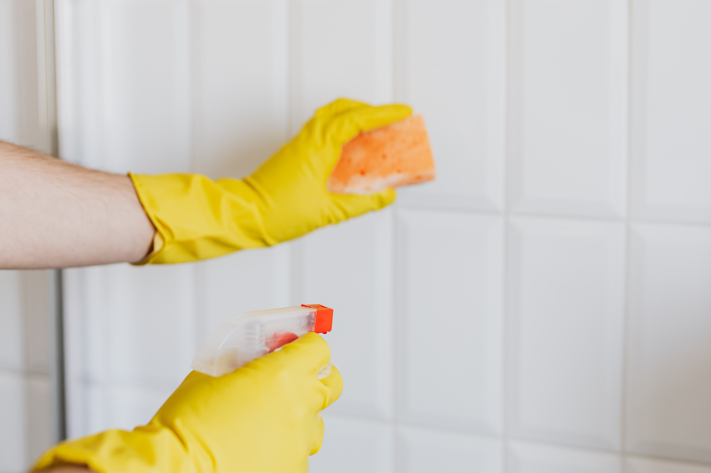
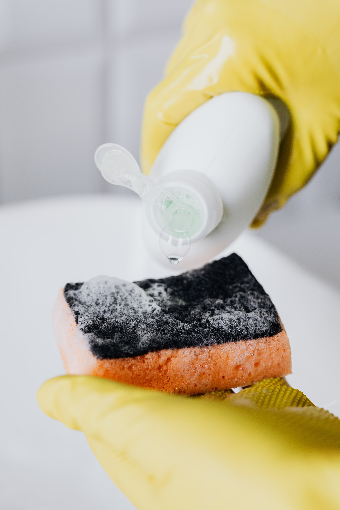
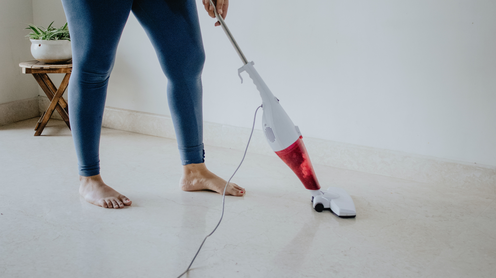
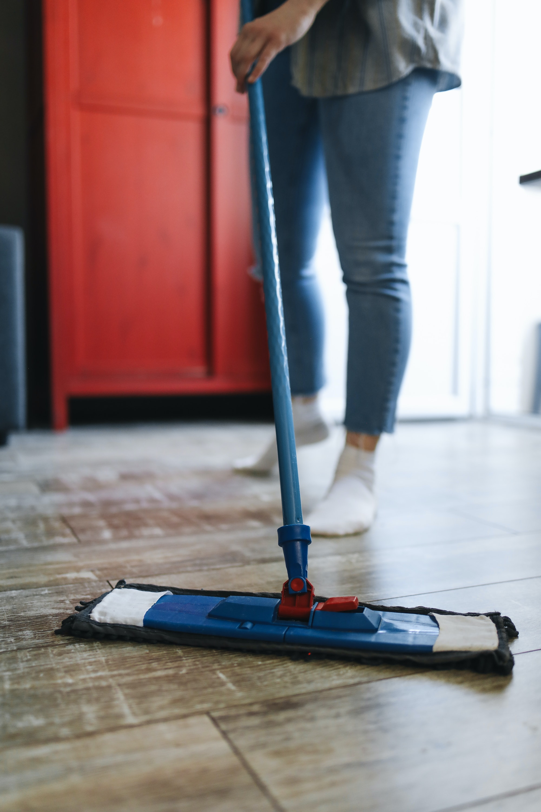
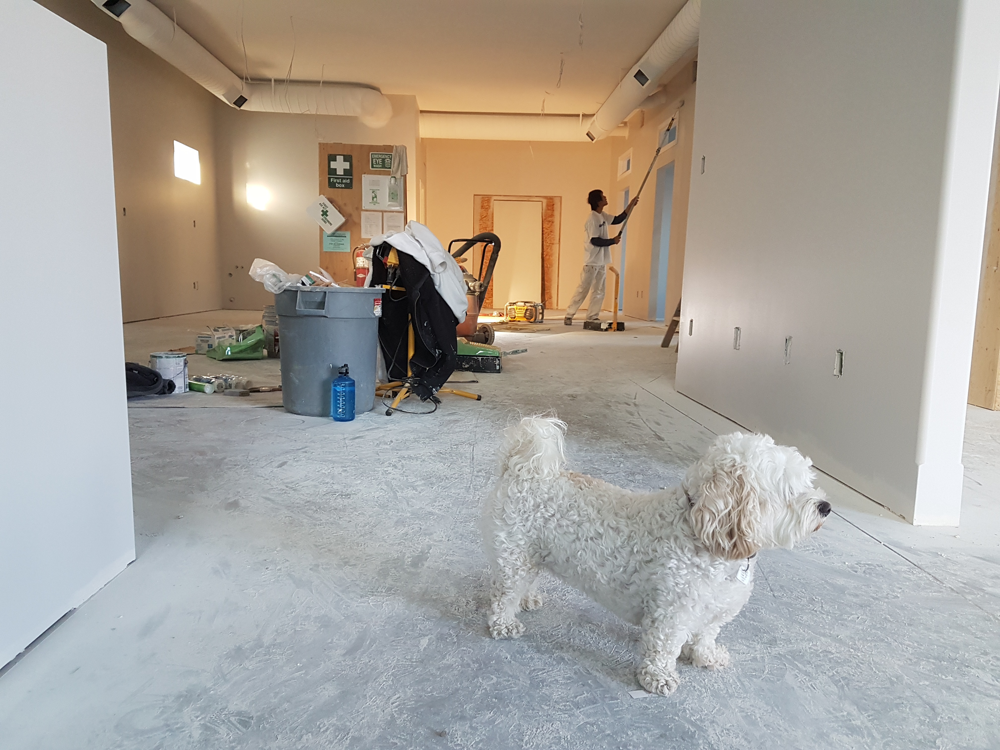

Fotos
    
Olá, me chamo Marta Galeano, e estou há 10 anos nesse mercado que encanta qualquer um. Tenho experiências, dicas e habilidades para colocar em prática na hora de fazer uma faxina de qualidade e 100% profissional.
Ver MaisTrabalho por diária que são totalizadas em 8 horas trabalhadas com 1 hora de almoço, colocando em prática todos os meus conhecimentos na área. Quando o imóvel é pequeno, minimalista e conservado, aproveito o tempo para fazer limpezas mais detalhistas, e/ou de interiores, por exemplo, parte interna de armários, geladeira, ou outro foco relacionado a limpeza. Quando médios e grandes, com muitos vidros, ou a muito tempo sem limpeza, priorizo o que está mais caótico do ponto de vista do meu cliente. O foco é entregar ao final do dia uma limpeza de qualidade dentro dessas 8 horas trabalhadas.
Contrate AgoraPara atingir um excelente resultado, conto também com ajuda do meu cliente, para me proporcionar materias fundamentais para que eu possa atingir o melhor resultado possível, tais como: Panos, vassoura, rodo, esponja, detergente, veja, entre outros... Peço a contribuição de todos os meus clientes, para que o meu trabalho saia da melhor maneira possível.
O serviço de LIMPEZA RESIDENCIAL pode ser realidado em toda a sua casa ou em alguma área específica.
Os atendimentos são realizados por Diária e são agendados com 07 dias de antecedência.
A limpeza interna é detalhada dos vidros e a limpeza externa de toda área acessível.
Venha falar comigo!